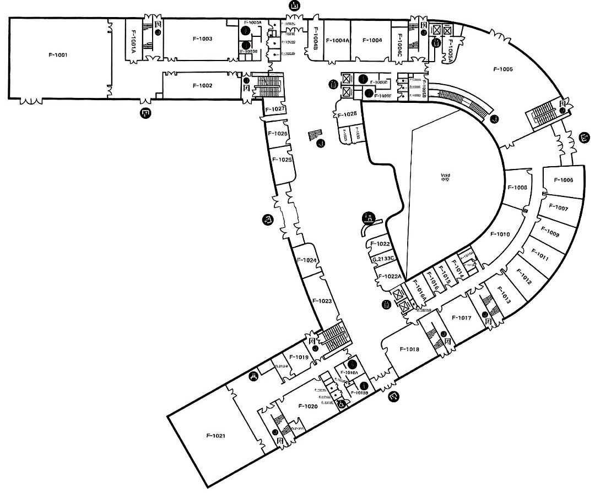

‹
寻课
F 栋 · 1F
…
×
1F
一层房间
收起
正在打开一层地图

当前浏览器无法显示三维模型，可继续搜索和查看原图。
2D
＋
−
⌗
点一下你现在的位置
取消
F
01
一层空间地图
拖动旋转 · 双指缩放
⌖
目的地 · F 栋一层
F-1021
阶梯教室
去这里
↗
F 栋 · 一层
选择导航
×
起点
选择你所在的教室
终点
F-1021
更换
⌖ 在地图上标记我的位置
本 sample 可选择起终点，导航路线待实地核验。
请先选择起点
1F 体验版 · 按图建模，路线待核验
地图说明
×